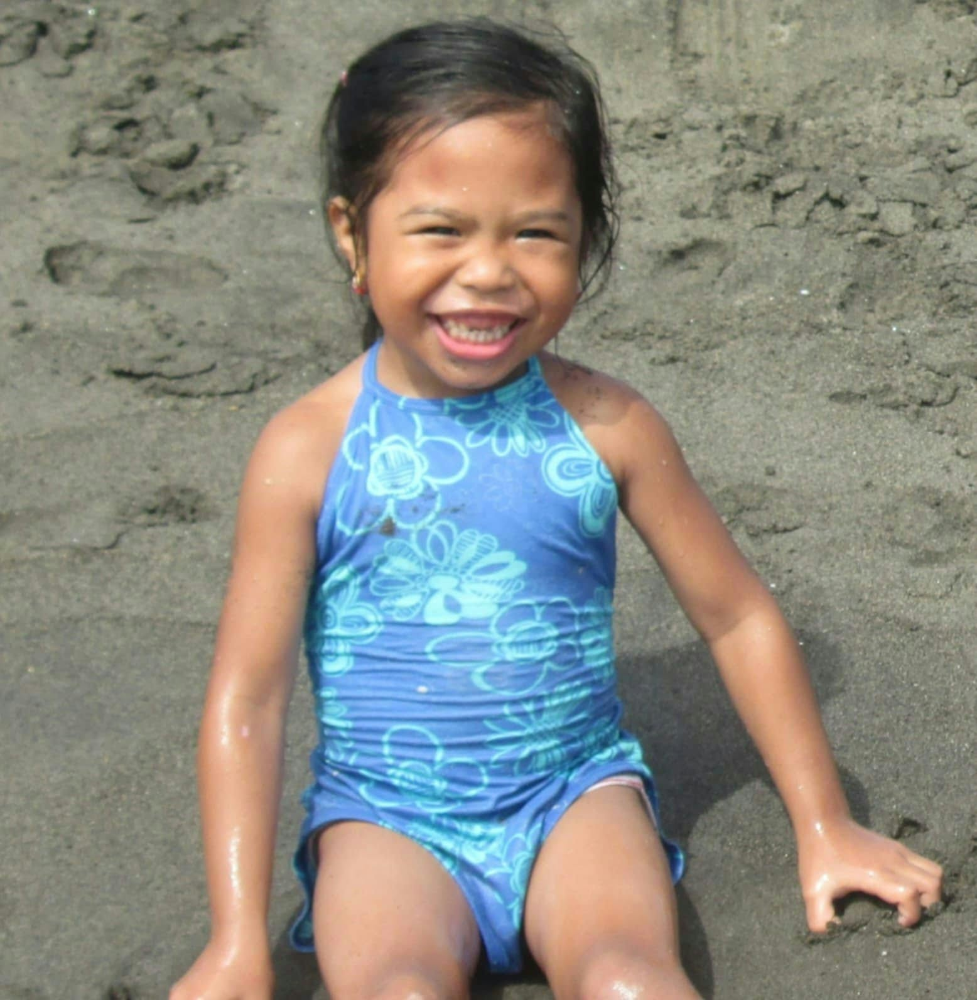
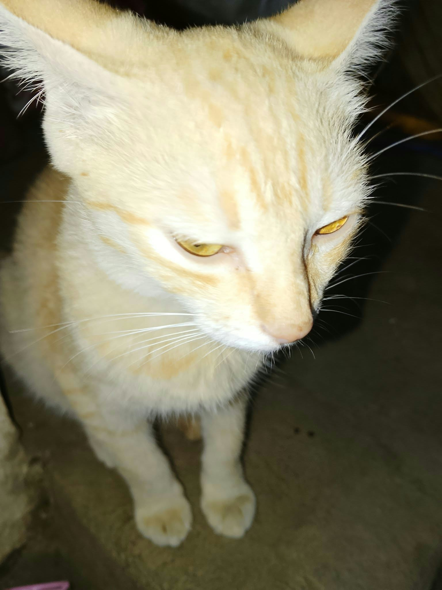

Hello!
Hello, everyone! I am Jhunissa A. Lorzano but you can call me "Nissa". I am a first-year BSCS student at Bicol University. I am shy at first, but once you get to know me, I am literally talkative.
About Me
Hobbies
- Singing
- Painting
- Playing guitar
- Watching Anime
- Playing online games
My Typical Day
On school days I wake up early, attend my classes, and code in between. In the evening I review my lessons and finish my exercises. When I have free time, I sing, play my guitar, play online games, watch anime or paint to relax.
My Path into Computing
I wasn't really interested in computing or making programs at first, but I somehow ended up in Computer Science and eventually chose to pursue it. Out of curiosity, I wanted to know how apps, websites, and programs are made. Now, I'm willing to learn more coding techniques and build things that people can actually use.
My Favorites and Skills
My Favorites
| Category | My Favorites |
|---|---|
| Favorite Artists | Taylor Swift, The Weeknd, SZA, NIKI, Joji, LANY, LAUV, Olivia Rodrigo, Laufey, Chase Atlantic, Daniel Caesar, Shanti Dope, Clairo, Beabadobee, Frank Ocean, Arthur Nery |
| Favorite Apps | Spotify, Instagram, TikTok, Facebook |
| What I Watch | Anime, J-drama, K-drama, Horror Movies |
| Favorite Genres | Romcom and thriller (fiction) |
Skills I Am Building
- C programming
- HTML and CSS
- Problem solving
My Goals
In the Next Few Years
I hope to become good at programming languages because I want to use my coding skills to finish my degree, start my own business, and one day travel the world while doing what I love.
My Top 3 Goals
- To finish studies and graduate
- To have my own business
- To travel around the world
My Album




Reflection
While making this page, I learned that web design needs patience and many small details. I improved in using HTML structure and CSS styling. I also learned that I can solve problems step by step, even when I am not sure at first.
Sources
- Quote: Suzy Kassem
- Profile and Album photos: My own photos